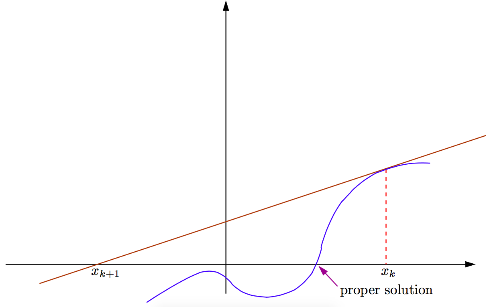

5. Non-linear Equations¶
We now turn our attention to solving non-linear equations. In an earlier lecture, we actually addressed one common non-linear equation, the quadratic equation \(ax^2+bx+c=0\), and discussed the potential hazards of using the seemingly straightforward quadratic solution formula. We will start our discussion with an even simpler non-linear equation:
The solution is obvious, \(x=\pm\sqrt{a}\) (assuming, of course, that we have a subroutine at our disposal that computes square roots). Let us, however, consider a different approach:
Start with \(x_0=\texttt{<initial guess>}\)
Iterate the sequence
(1)\[x_{k+1}=\frac{x_k^2+a}{2x_k}\]
We can show (and we will via examples) that this method is quite effective at generating remarkably good approximations of \(\sqrt{a}\) after just a few iterations. Let us, however, attempt to analyze this process from a theoretical standpoint. If we assume that the sequence \(x_0, x_1, x_2,\ldots\) defined by this method has a limit, how does that limit relate to the problem at hand? Assume \(\lim_{k\rightarrow\infty}=A\). Then, taking limits on equation (1) gives
Thus, if the iteration converges, the limit is the solution of the nonlinear equation \(x^2-a=0\). The second question is whether it may be possible to guarantee that the described iteration will converge. For this, we manipulate equation (1) as follows
If we denote by \(e_k=x_k-\sqrt{a}\) the error (or discrepancy) from the exact solution of the approximate value \(x_k\), the previous equation reads
For example, if we were approximating the square root of \(a=2\), and at some point we had \(e_k=10^{-3}\), the previous equation would suggest that \(e_{k+1}<10^{-6}\). One more application of this equation would yield \(e_{k+2}<10^{-12}\). Thus we see that, provided the iteration starts close enough to the solution, we not only converge to the desired value, but actually double the number of correct significant digits in each iteration. We defer the detailed proof until after we have introduced the more general method.
5.1. Newton’s Method¶
This example is a special case of an algorithm for solving nonlinear equations known as Newton’s method (also called the Newton-Raphson method). The general idea is as follows: if we “zoom” close enough to any smooth function, its graph looks more and more like a straight line (specifically, the tangent line to the curve). Newton’s method suggests: if after \(k\) iterations we have approximated the solution of \(f(x)=0\) (a general nonlinear equation) as \(x_k\), then:
{kind=link}
- Form the tangent line at \((x_k,f(x_k))\).
- Select \(x_{k+1}\) as the intersection of the tangent line with the horizontal axis (\(y=0\)).
If \((x_n,y_n)=(x_n,f(x_n))\), the tangent line to the plot of \(f(x)\) at \((x_n,y_n)\) is:
Thus, the tangent line has equation \(y-y_n=f'(x_n)(x-x_n)\).
{kind=link}
Setting \(y=0\) gives
Ultimately, Newton’s method reduces to:
Our previous example (square root of \(a\)) is just an application of Newton’s method to the nonlinear equation \(f(x)=x^2-a=0\). Applying equation (2) gives:
which is the same iteration we considered previously. A few comments about Newton’s method:
It requires the function \(f(x)\) to be not only continuous, but differentiable as well. We will later see variants that do not explicitly require knowledge of \(f'\). This would be an important consideration if the formula for \(f'(x)\) is significantly more complex and expensive to evaluate than \(f(x)\), or if we simply do not possess an analytic expression for \(f'\) (this could be the case if \(f(x)\) is not given to us via an explicit formula, but only defined via a black-box computer function that computes the value).
If we ever have an approximation \(x_k\) with \(f'(x_k)\approx 0\), we should expect problems, especially if we are not close to a solution (we would be nearly dividing by zero). In such cases, the tangent line is almost (or exactly) horizontal. Thus, the next iterate can be a very remote value and convergence may be far from guaranteed.

{kind=link}
5.2. Fixed Point Iteration¶
Newton’s method is in itself a special case of a broader category of methods for solving nonlinear equations called fixed point iteration methods. Generally, if \(f(x)=0\) is the nonlinear equation we seek to solve, a fixed point iteration method proceeds as follows:
Start with \(x_0 = \enspace <\textsf{initial guess}>\).
Iterate the sequence
\[x_{k+1} = g(x_k)\]where \(g(x)\) is a properly designed function for this purpose. Note that \(g(x)\) is related, but otherwise different than \(f(x)\).
Following this method, we construct the sequence \(x_0, x_1, x_2,\ldots,x_k,\ldots\) hoping that it will converge to a solution of \(f(x)=0\). The following questions arise at this point:
- If this sequence converges, does it converge to a solution of \(f(x)=0\)?
- Is this iteration guaranteed to converge?
- How fast does this iteration converge?
- (Of practical concern) When do we stop iterating and declare that we have obtained an acceptable approximation?
We start by addressing the first question: if the sequence \(\{x_k\}\) does converge, can we ensure that it will converge to a solution of \(f(x)=0\)? Taking limits on \(x_{k+1}=g(x_k)\), and assuming that
- \(\lim_{k\rightarrow\infty} x_k=a\), and
- the function \(g\) is continuous,
gives
The simplest way to guarantee that \(a\) is a solution to \(f(x)=0\) (in other words, \(f(a)=0\)) is if we construct \(g(x)\) such that
There are many ways to make this happen, for example,
or
or
The last example is exactly Newton’s method; substituting the definition of \(g(x)\) above into the iteration \(x_{k+1}=g(x_k)\) yields the familiar Newton update equation. Thus, we know that if fixed point iteration converges, it will be to a solution of \(f(x)=0\). From above, it should be apparent that the choice of \(g(x)\) is certainly not unique. Unfortunately, not all these choices lead to an effective method. For example, consider the nonlinear equation \(f(x)=x^2-a=0\) (solution: \(\pm\sqrt{a}\)) and the function \(g(x)=a/x\). We can easily verify that
However, the iteration \(x_{k+1}=g(x_k)=a/x_k\) yields,
Thus, the sequence alternates forever between the values \(x_0,x_1,x_0,x_1,\ldots\) regardless of the initial value. Other choices of \(g(x)\) may also create divergent sequences, often regardless of the value of the initial guess. Fortunately, there are ways to ensure that the sequence \(\{x_k\}\) converges, by making an appropriate choice of \(g(x)\). We will use the following definition:
Definition
A function \(g(x)\) is called a contraction in the interval \([a,b]\), if there exists a number \(L\in[0,1)\) such that
for any \(x,y\in[a,b]\).
Examples:
\(g(x)=x/2\):
\[|g(x)-g(y)|=\frac{1}{2}|x-y|\]for any \(x,y\in\mathbb R\).
\(g(x)=x^2\), in \([0.1,0.2]\):
\[|g(x)-g(y)|=|x^2-y^2|=|x+y||x-y|\leq 0.3|x-y|\]for \(x,y\in[0.1,0.2]\) (in this case this condition is essential!)
If we can establish that the function \(g\) in the fixed point iteration \(x_{k+1}=g(x_k)\) is a contraction, we can show the following:
Theorem
Let \(a\) be the actual solution to \(f(x)=0\), and assume \(|x_0-a|<\delta\), where \(\delta\) is an arbitrary positive number. If \(g\) is a contraction on \((a-\delta,a+\delta)\), the fixed point iteration is guaranteed to converge to \(a\).
Proof: Since \(a\) is the solution, we have \(a=g(a)\). Thus,
Since \(L<1\), we have \(\lim_{k\rightarrow\infty} |x_k-a|=0\), i.e., \(x_k\rightarrow a\).